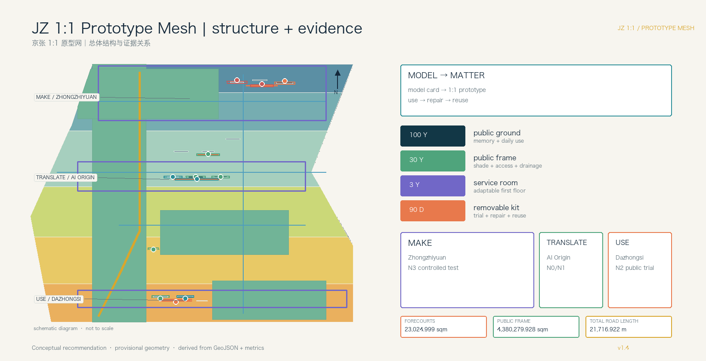
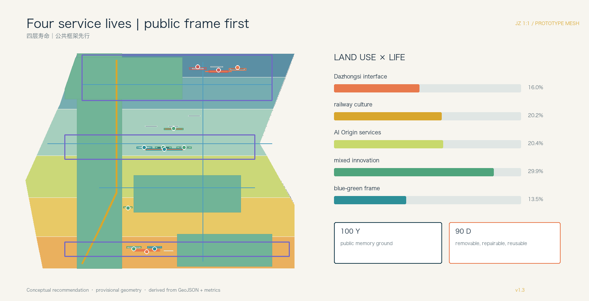
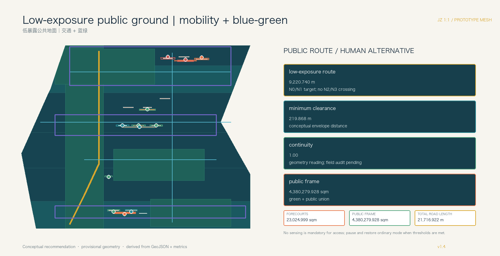

Overview map and core metrics
The same GeoJSON drives the map, metrics, figures, and drawings.

Three scope levels and four service lives
The three-level scope framework is translated into long-life ground, public frame, adaptable rooms, and removable kits.
Public frame
shade + access + drainage + lightingService room
adaptable first floor + human counterRemovable kit
trial + repair + reuse + retirementKey areas / MAKE → TRANSLATE → USE
Three areas remain different while sharing a prototype passport.
Zhongzhiyuan
- Prototype room and courtyard
- Material passport
- N3 controlled test
AI Origin Community
- Adaptable service room
- Human and offline counter
- N0/N1 low exposure
Dazhongsi
- Adoption porch
- Repair and reuse desk
- N2 visible public trial
Land use, mobility, and blue-green frame
Building and road shapes remain conceptual. Formal ownership, controls, redlines, utilities, heritage, fire, and flood conditions are pending.


Algorithmic Exposure Cadastre
Every prototype node declares sensing, hours, retention, human handover, masks, expiry, and an ordinary human/offline equivalent.
| ID | role | level | hours | retention | human handover |
|---|---|---|---|---|---|
| NODE-001 | park_review_face | N1 | 08:00-20:00 | none | human_culture_review |
| NODE-002 | offline_service_room | N0 | offline_only | none | service_desk |
| NODE-003 | translation_room | N1 | 09:00-18:00 | none | ip_service_reviewer |
| NODE-004 | prototype_room | N3 | 09:00-17:00 | event_log_30d | safety_reviewer |
| NODE-005 | interface_box | N1 | 09:00-18:00 | aggregate_24h | energy_operator |
| NODE-006 | public_feedback_desk | N2 | event_only | event_log_7d | public_operations_team |
| NODE-007 | prototype_passport_counter | N3 | 09:00-17:00 | event_log_30d | accessibility_reviewer |
| NODE-008 | offline_human_service_porch | N0 | offline_only | none | human_service_desk |
| NODE-009 | adoption_retirement_desk | N2 | 10:00-20:00 | aggregate_24h | venue_operator |
| NODE-010 | repair_reuse_workbench | N0 | maintenance_only | none | maintenance_team |
| NODE-011 | ninety_day_public_segment | N1 | 07:00-22:00 | aggregate_24h | mobility_reviewer |
| NODE-012 | long_life_frame_interface_box | N1 | event_only | aggregate_24h | park_operator |
| ZONE-001 | N1 | 08:00-20:00 | none | human_culture_review | |
| ZONE-002 | N0 | offline_only | none | service_desk | |
| ZONE-003 | N1 | 09:00-18:00 | none | ip_service_reviewer | |
| ZONE-004 | N3 | 09:00-17:00 | event_log_30d | safety_reviewer | |
| ZONE-005 | N1 | 09:00-18:00 | aggregate_24h | energy_operator | |
| ZONE-006 | N2 | event_only | event_log_7d | public_operations_team | |
| ZONE-007 | N3 | 09:00-17:00 | event_log_30d | accessibility_reviewer | |
| ZONE-008 | N0 | offline_only | none | human_service_desk | |
| ZONE-009 | N2 | 10:00-20:00 | aggregate_24h | venue_operator | |
| ZONE-010 | N0 | maintenance_only | none | maintenance_team | |
| ZONE-011 | N1 | 07:00-22:00 | aggregate_24h | mobility_reviewer | |
| ZONE-012 | N1 | event_only | aggregate_24h | park_operator |
AI scenarios
Twelve cards connect space, data boundary, operator, non-AI equivalent, stop threshold, and end-of-life path.
Accessible wayfinding
MAKE / N3
Adjustable public furniture
MAKE / passport
Offline service interface
MAKE → TRANSLATE
Research translation room
TRANSLATE / N1
Community care navigation
human + offline
Shared making course
3-year room
Station adoption trial
USE / N2
Repair and reuse ledger
USE / N0
Railway culture guide
rights-cleared
AI walking diagnosis
field retest
Low-speed service device
human takeover
Resilience notice
aggregate only
Task coverage and self-check state
All announcement tasks, agent.1–agent.6, mandatory standards, and 15 design-depth items are mapped to evidence.
Sources
Official announcement, cleared taskbook, repository source registry, standard snapshots, and provisional boundary file.
sources.json / standard_matrix.jsonAssumptions
Official geometry, ownership, controls, building survey, transport, utilities, heritage, fire, flood, and operation remain pending.
assumptions.json / design_depth_matrix.jsonSelf-check state
Deterministic, spatial, visual, professional, bilingual, and manifest checks are rerun after each final edit.
self_check.json / compliance_matrix.jsonEquity and operating evidence
These indicators are registered in metrics.json, but no service, night-operation, or maintenance log exists yet. Establish the baseline by access group and time window before a formal pilot.